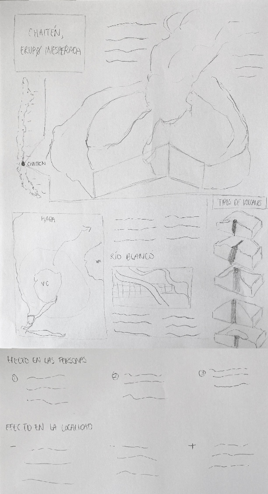

Primera Iteración


Chile es uno de los 5 países con más volcanes activos en el mundo (Chile, Indonesia, Estados Unidos, Japón, Rusia), con cerca de 95 volcanes. Esto debido a que Chile pertenece a uno de los 40 países del Cinturón de Fuego, una región de 40.000 kilómetros en la que varias placas oceánicas se deslizan y aproximan. El jueves 1 de mayo de 2008 inesperadamente el volcán Chaitén entra en erupción causando la destruccón casi por completo la ciudad de Chaitén.
La caída de cenizas en el río, el deshielo y los días de lluvia terminaron provocando, diez días después de la erupción, el desborde del Río Blanco y el aumento del caudal de las aguas. El Río ascendió hasta 1,5 metros de su cauce habitual, desencadenando la evacuación total de los habitantes de Chaitén. El desborde destruyó una gran parte del pueblo, y la erupción continuó siendo muy fuerte por varios meses, para decaer en fuerza con el tiempo y finalmente terminar en Mayo del 2011, tres años después de haberse iniciado.